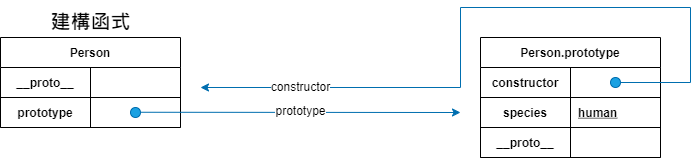
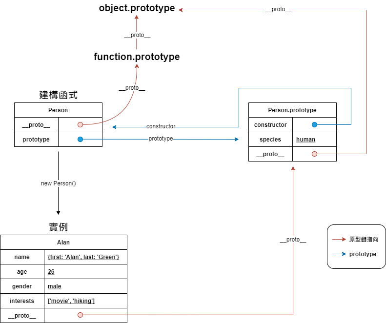

前言
這是自學筆記的第一篇，我在寫這一篇文章的背景是在學習完Freecodecamp還有實作React一段時間之後，所以對JavaScript的語法和使用上都有一定程度的了解。
文章最後也會附上參考資料來源，都是我認為非常棒的作者和文章。因為我本身是自學，所以這樣的學習順序不知是否正確，但是我以自己的經驗認為這樣的學習方式是很好的，原因是：
先學會用，再了解其背後的原理。
這樣不會一開始就覺得枯燥學不下去，而且舉例的時候才能有較好的理解和聯想關聯性。
原型基礎物件導向
首先說明何謂物件導向程式設計（Object-oriented programming:OOP），物件導向是一種程式設計模式，簡單來說就是將「物件」作為程式的基本單元來做設計。
並非所有程式語言都有物件導向設計，例如：C就不支援物件導向。後來的C++、Objective-C則是在C之上加入物件導向的功能。
近年來，物件導向的程式設計越來越流行於手稿語言中，包括Python和JavaScript都是建立在OOP原理之上的程式語言，而Perl和PHP亦分別在Perl 5和PHP 4時加入物件導向特性。
JavaScript是原型為基礎的物件導向設計。與Java、C++不同的是，JavaScript原始沒有類別（Class）的概念，而很多教學和文章介紹的類別定義方法（例如：ES6的Class），並不是真的是以類別為基礎(class-based)的，而是仍然以原型為基礎(prototype-based)的語法糖。
註: 語法糖(Syntactic sugar)指的是在程式語言中添加的某些語法，這些語法對語言本身的功能並沒有影響，但是能更方便使用，可以讓程式碼更加簡潔，有更高可讀性。
原型（prototype）
什麼是原型？
為了提供繼承性，物件可以有一個原型對象，而且物件將以此原型對象作為模版，繼承其方法及屬性。
簡單舉一個例子，Mary和Alan都是「人」。他們有共通的屬性，像是有姓名（name）、年齡（age）、性別（gender）、興趣（interests）等等。
首先用基礎JavaScript定義物件的方式，先定義一個Person物件，現在將它作為一個「原型」，接著我們用這個原型複製出Mary和Alan。
1 | const Person = { |
若是還不知道如何使用原型鍊或建構子繼承的方式，可能會直接定義一個Mary和Alan物件，並客製化屬性的值。
其實這樣做完全沒有使用Person這個原型，而是直接建立了兩個新的物件，意義上是錯的。
1 | const Mary = { |
如果是使用Mary和Alan直接賦值為Person，並修改其屬性的值。
這個方法不但沒有沒有建立新的物件，而且Mary、Alan的屬性都會在每一次新的賦值後被更改。
1 | const Mary = Person |
由此可知用現有基礎觀念是無法實現「原型」的概念，所以這邊需要來認識「建構函式」。
建構函式（Constructor）和實例（instance）
建構函式的概念是從Java和C++來的，前面有稍微提到Java和C++是基於類別的程式語言，會利用類別來建立實例，而在類別裡有個很特別的函式叫「建構函式」，他會進行實例的初始化，設置對象屬性的初始值。其中，C++及Java都始用new命令來產生新的實例。
C++的寫法是：
1 | ClassName *object = new ClassName(param); |
Java的寫法是：
1 | Foo foo = new Foo(); |
所以設計者便把new引入JavaScript，但是JavaScript沒有Class，後面要接什麼呢？
這時，他想到C++及Java使用new命令時，都會調用「類別」裡的建構函數（constructor），所以他做了一個簡化，直接在new的後面接一個函式吧！
以上一個例子來說，現在有一個叫做Person的函式：
1 | function Person(first, last, age, gender, interests) { |
對這個函數使用new，JavaScript就會將它視為建構函數，並且生成一個Person的實例。建構函數中的this代表新創建的實例對象。
new運算子的缺點
用建構函數生成實例對象，有一個缺點，就是無法共享屬性和方法。接續上一段程式碼，修改Mary或Alan其中一個，不會影響到另一個。
1 | Alan.age = 10 |
為什麼說這是缺點？
每一個實例對象，都有自己的屬性和方法，因為沒辦法共享數據，所以沒辦法節省資源。
prototype屬性引入
考慮到這一點，設計者決定為建構函數添加一個prototype屬性，而prototype屬性值就是一個物件。所有實例對象需要共享的屬性和方法，都放在這個物件中；不需要共享的屬性和方法，就放在建構函式中。
實例一但創建（如Alan和Mary），將自動引用prototype物件的屬性和方法。也就是說，實例的屬性和方法，分成兩種，一種是本地的，另一種是引用的。
用同樣個例子說明，建構函式中的屬性（first、last、age、gender、interests）這些都是本地給值，都會各自佔用資源。接下來我們用prototype給值：
1 | function Person(first, last, age, gender, interests) { |
現在species屬性放在prototype物件裡，是兩個實例共享的，只要修改prototype物件，就會同時影響兩個實例。
1 | Person.prototype.species = 'vampire' |
原型鏈（prototype chain）
JavaScript沒有父類、子類的繼承，也沒有類別（class）和實例（instance）的區分，全靠「原型鏈」（prototype chain）的方式來繼承。
物件與物件之間的連結有各自的屬性，讓JavaScript可以實現「繼承」，接下來就讓我們深入了解這些屬性。
prototype
所有JavaScript中的函式都有一個內建的prototype屬性，指向一個特殊的prototype物件，prototype物件中也有一個constructor屬性，指向原來的函式。
用程式碼來驗證：
1 | console.log(Person.prototype.constructor === Person) // true |

proto
再來是__proto__這個內部屬性，它是每一個JavaScript裡物件都有的內部屬性，它會指向該物件的原型（prototype），用來連接出原型鏈，也就是JavaScript的繼承方式。
對於一個函式而言，它的原型就是Function.prototype，這可以說是所有函式的發源地。所以Person函式的__proto__會指向Function.prototype。
那Person.prototype的__proto__又指向哪裡？Person.prototype本身是也一個物件，它直接指向JavaScript中最上層的物件起源Object.prototype。
由此可知，Function.prototype也會同樣指向Object.prototype。然而剛剛也說了Object.prototype是原型鏈的最上層，那它的__proto__又會指向哪呢？以下用程式碼驗證就清楚了：
1 | console.log(Person.prototype.__proto__ === Object.prototype) // true |
原型鏈的終點答案就是指向Null，所以可以說Object.prototype就是原型鏈的最上層。
用之前的例子做出以下簡單的圖示，圖片中紅色箭頭即為__proto__的指向

註：
__proto__注意是前後各有兩條下底線（_）。
註：雖然現今__proto__被幾乎所有瀏覽器支援，且ES6已經正式被標準化，以確保 Web 瀏覽器的兼容性，但是不推薦使用，除了標準化的原因之外還有性能問題。
結語
這篇文章不是我自己發想的，頂多只能算是記錄我查的許多資料集大成。了解原型可以幫助了解JavaScript的運作模式，尤其是在寫ES6的Class語法糖的時候，裡面的constructor是什麼意思，為什麼要用extends，好像都可以比較了解了。（雖然目前class componment目前正在被社群逐漸淘汰中，都改用function conponent取代）
參考資料：
- 從ES6開始的JavaScript學習生活 - 原型基礎物件導向
- 你懂 JavaScript 嗎？#19 原型（Prototype）
- 15. [JS] 什麼是原型鏈？
- JavaScript原型系列（一）構造函數、原型和原型鏈
- Javascript继承机制的设计思想
- 你懂 JavaScript 嗎？#19 原型（Prototype）
- [筆記] 了解JavaScript中原型(prototype)、原型鍊（prototype chain）和繼承(inheritance)的概念
- 面試官最愛考的 JS 原型鏈
- JS基本觀念: 原型鏈(prototype chain)
尤其推薦參考資料5、8